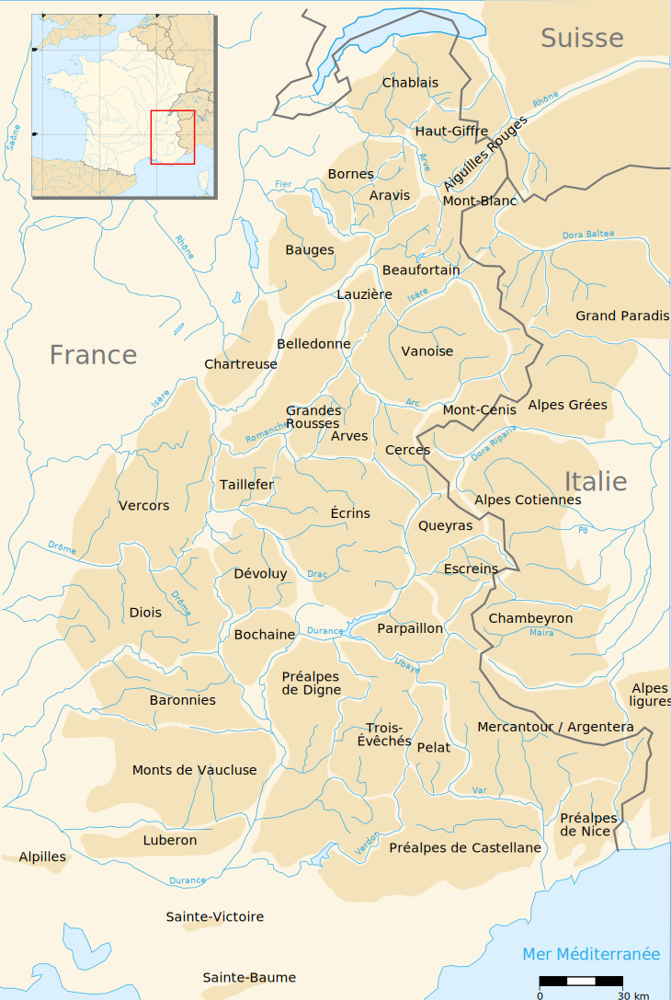
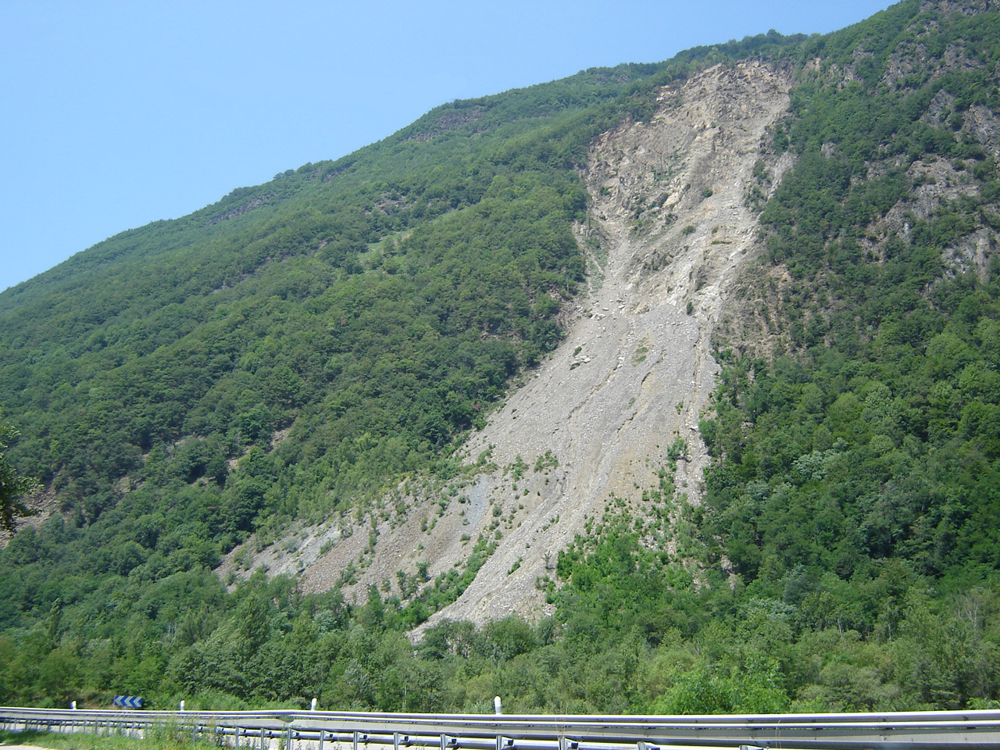
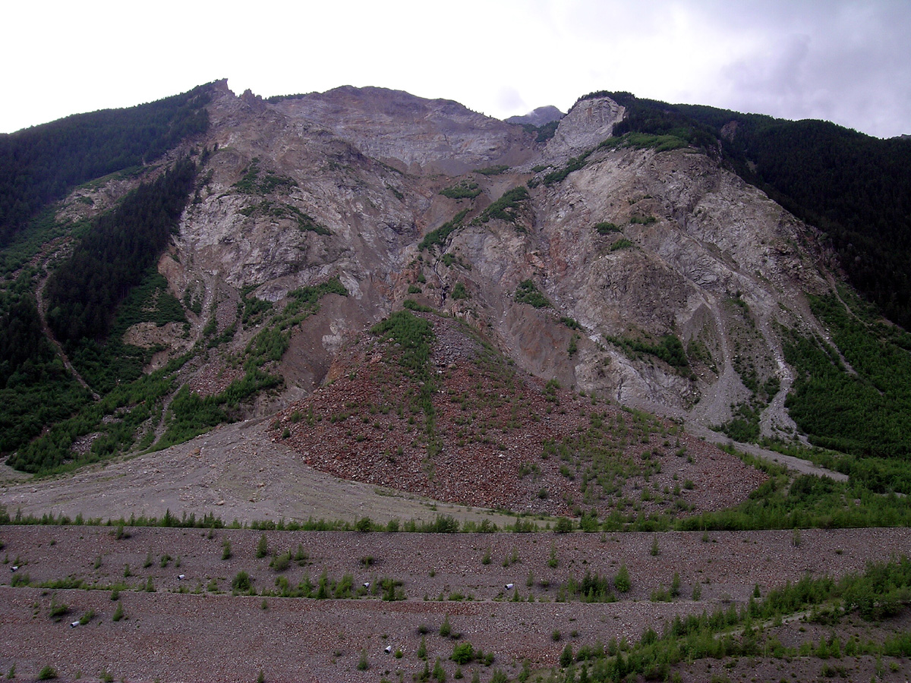

Retour
Page précédente
Page suivante
QCM : Les formations de versant - Auto-évaluation
Les Ruines de Séchilienne
Votre navigateur ne supporte pas la lecture de cette vidéo.
1. Où se trouvent les Ruines de Séchilienne, connu pour être un versant instable ?

×
A) Dans la vallée de la Maurienne, où s'écoule l'Arc.
B) Dans la vallée de l'Arve
C) Dans la vallée de la Romanche, à une vingtaine de kilomètres en amont de Grenoble
D) Dans la vallée de la Tarentaise, où s'écoule l'Isère.
Commentaire:
Dans la vallée de la Romanche
2. Les Ruines de Séchilienne se présent sous la forme d'...

×
A) un cône d'éboulis.
B) une terrasse alluviale.
C) un cône de déjection.
D) une loupe de solifluxion.
E) une loupe de glissement de terrain.
Commentaire:
C'est un cône d'éboulis alimenté par les blocs qui se détachent du haut du versant rocheux
3. Quels sont les aléas présentés par ce versant instable des Ruines de Séchilienne ?
A) Des coulées de boues.
B) Des glissements de terrain.
C) Des éboulements
D) Des chutes de pierre
E) La formation d'un lac de barrage lors d'une crue de la Romanche, suivie de sa rupture, et la survenue d'une onde de crue jusqu'à Grenoble.
F) La formation d'un barrage obstruant la vallée en contre-bas suite à un grand éboulement.
Commentaire:
Chutes de pierres, éboulements avec toutes les conséquences envisageables selon la masse de blocs effondrés: obstruction de la vallée, formation de lac de barrage et sa vidange en cas de grosse crue de la Romanche avec submersion des zones à fort enjeu de l'agglomération grenobloise
4. Quels sont les zones vulnérables aux instabilités des Ruines de Séchilienne ?
A) L'agglomération de Grenoble.
B) La route qui passe en contrebas, et qui relie Grenoble à Briançon.
C) La ville de Briançon.
Commentaire:
Toutes les zones en contrebas et en aval sont vulnérables
5. L'instabilité du versant des Ruines de Séchilienne est ...
A) un phénomène très récent apparu au XVIIIe siècle
B) un processus de long terme qui a commencé depuis la dern!ère déglaciation
Commentaire:
Cette instabilité de versant fait suite à la déglaciation de cette vallée alpine. La disparition du glacier de la Romanche a entraîné une décompression des terrains.
6. Est-il possible d'arrêter le mouvement de ce versant instable ?
A) Non, mais on peut le freiner
B) Oui
C) Non
Commentaire:
Ce versant s'effondrera un jour. On ne peut pas l'empêcher, ni même le ralentir.
7. Est-ce que l'on peut espérer que l'effondrement de ce versant stabilisera la vallée ?
A) Peut-être
B) Non
C) Oui
Commentaire:
Seule une partie du versant tombera. Le reste du versant dans sa nouvelle configuration sera dans une situation plus ou moins stable, car la masse effondrée constituait en fait une butée qui le stabilisait.
8. Est-ce que les scénarios les plus pessimistes envisagés dans les années 90 se sont réalisés ?
A) Oui
B) Non
Commentaire:
Les scénarios les plus pessimistes dans les années 90 envisageaient la chute d'un volume de 30 à 50 Mm
3
de roches à une échéance de 10 ans. En 2025, 35 ans après, le versant est toujours là.
9. Quelle est l'ampleur de la vitesse de déplacement de la zone frontale dans les années 2010 ?
A) Environ 2 centimètres par an
B) Environ 2 décimètres par an
C) Environ 2 mètres par an
D) Environ 2 millimètres par an
Commentaire:
Dans les années 2010, la zone frontale se déplaçait à une vitesse d'environ 2 mètres par an, ce qui alertait les pouvoirs publics.
10. Quelle loi a permis d'enclencher l'expropriation et l'indemnisation dans la zone à risques ?
A) La loi Duflot
B) La loi Hulot
C) La loi Balladur
D) La loi Barnier
Commentaire:
C'est la loi Barnier, du 2 février 1995, qui prévoit des dispositions sur la « sauvegarde des populations menacées par certains risques naturels majeurs »
11. Que s'est-il passé en 1219 à Grenoble ?
A) Un éboulement massif d'un versant comparable à celui des Ruines de Séchilienne, qui a ravagé la ville.
B) Des destructions majeures causées par une lave torrentielle descendue de la vallée de la Romanche.
C) Une inondation de grande ampleur suite à la rupture d'un lac de barrage formé par un éboulement de versant dans la vallée de la Romanche.
D) Un séisme majeur qui a détruit la ville.
Commentaire:
En 1219, Grenoble a été inondée par une masse d'eau déversée à la suite de la rupture d'un barrage naturel, formé dans la vallée de la Romanche après un éboulement survenu en 1191.
12. Quelles sont les premières mesures de prévention prises après l'éboulement de 1985 ?
A) Mise en place d'un système d'alertes 24h sur 24, et 7 jours sur 7
B) Déplacement de la route sur le versant opposé de la vallée.
C) Construction d'une digue et d'un merlon en contrebas.
D) Implantation d'un système de mesures in-situ
E) Pose d'un grillage
Commentaire:
Ces mesures visent à protéger les habitants et les infrastructures en réduisant les risques d'éboulements et en permettant une surveillance continue.
13. Cette photo montre un flanc de montagne, dans la région italienne de la Valteline, qui a été sujet à un grand éboulement le 28 juillet 1987.

×
A) Un troupeau de chèvres particulièrement ambitieux a décidé de se lancer dans une course effrénée sur le versant.
B) La rivière Val Pola, en érodant la base du versant de la montagne, a déstabilisé le flanc et provoqué l'éboulement.
C) La catastrophe est due à des pluies intenses, combinées à une arrivée en grande quantité d'eaux de fonte des glaciers.
D) C'était la faute des alpinistes qui, après avoir monté un camp de base un peu trop près du bord, ont décidé de faire la fête trop fort.
Commentaire:
Cet éboulement a causé des destructions majeures et a mis en évidence l'impact combiné des facteurs naturels sur la stabilité des versants montagneux.
14. Cette vidéo montre un phénomène qui s'est produit aux Etats-Unis. Que peut-on dire là-dessus ?
Votre navigateur ne supporte pas la lecture de cette vidéo.
A) C'est une lave torrentielle.
B) L'écoulement est homogène. On ne distingue pas d'évolution entre la partie frontale et la suite.
C) La partie frontale de l'écoulement est très chargée en débris rocheux et divers (troncs d'arbres), et est suivie par un écoulement plus aqueux.
D) C'est une crue.
Commentaire:
C'est de nouveau une lave torrentielle qui se se déverse dans la vallée. Malgré l'absence de pente, la lave a conservé son pouvoir destructeur en raison de la forte densité de son écoulement boueux.
Corriger
Recommencer